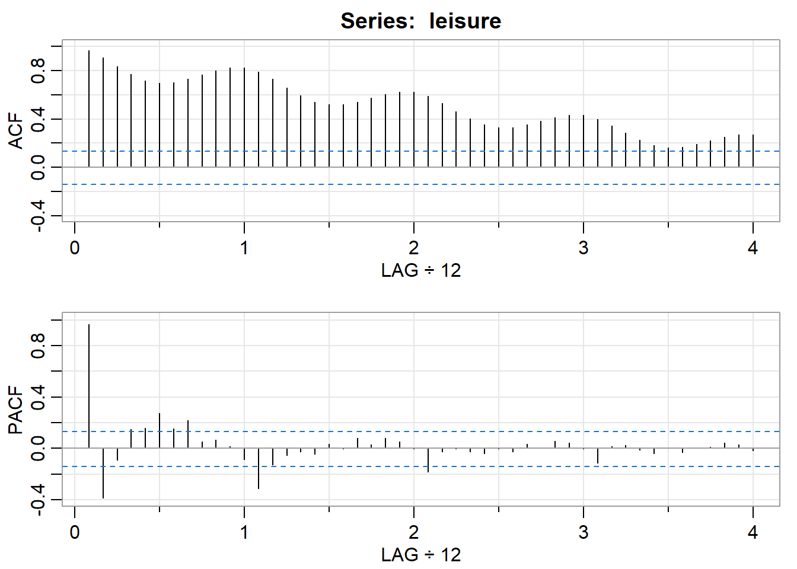
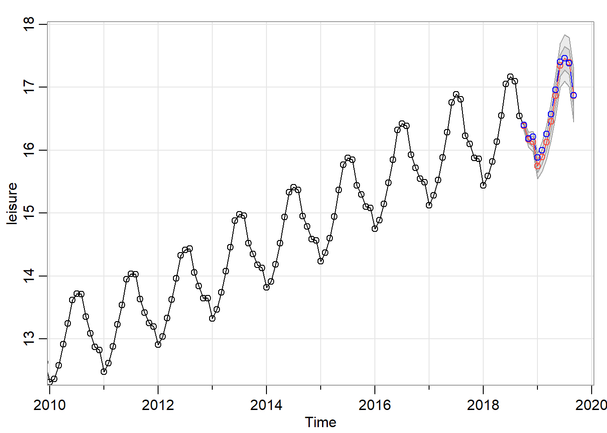

Cvičenie 5 - Sezónne modely, modelovanie trendu
1 Potrebne knižnice pre cvičenie 5
2 Zostavenie sezónnych ARIMA modelov
2.1 Dáta
Budeme pracovať s údajmi o zamestnanosti pre USA. Konkrétne budeme pracovať s niektorými podsektormi služieb a cestovného ruchu. V datasete us_employment nájdete okrem týchto dát aj mnoho ďaľších, týkajúcich sa zamestnanosti v jednotlivých sektorov po mesiacoch.
Načítame si dáta do premennej leisure a vytvoríme z nej object ts.
leisure <- us_employment %>%
filter(Title == "Leisure and Hospitality",
year(Month) > 2000) %>%
mutate(Employed = Employed/1000) %>%
select(Month, Employed)
leisure <- ts(leisure$Employed, start = c(2001,1), end = c(2019,9),
frequency = 12)Vykreslimíme si dáta.
autoplot(leisure) +
labs(title = "US employment: leisure and hospitality",
y="Number of people (millions)")Dáta sa nevyznačújú rastúcou disperziou, ako je vidno na grafe, preto nebude treba pracovať s ich logaritmami. Z dát si vynecháme poslednych 12 hodnôt, ktoré využijeme pri zhodnotení predikcií.
# odlozime si posledny rok dat na zhodnotenie predikcii
leisure.pred <- window(leisure, start = c(2018,10))
# budeme pracovat s kratsim casovym radom
leisure <- window(leisure, end = c(2018,9))Vykreslíme si iba tie údaja, s ktorými budeme pracovať priamo.
2.2 Zostavenie a vyhodnotenie SARIMA modelu
Vykreslíme si ACF a PACF pre naše dáta.

## [,1] [,2] [,3] [,4] [,5] [,6] [,7] [,8] [,9] [,10] [,11] [,12] [,13]
## ACF 0.97 0.91 0.83 0.77 0.72 0.70 0.70 0.73 0.77 0.80 0.82 0.82 0.79
## PACF 0.97 -0.38 -0.09 0.15 0.16 0.27 0.15 0.22 0.05 0.07 0.02 -0.08 -0.31
## [,14] [,15] [,16] [,17] [,18] [,19] [,20] [,21] [,22] [,23] [,24] [,25]
## ACF 0.73 0.66 0.59 0.54 0.52 0.52 0.54 0.57 0.60 0.62 0.62 0.59
## PACF -0.13 -0.06 -0.03 -0.04 0.03 0.00 0.08 0.03 0.08 0.05 0.00 -0.18
## [,26] [,27] [,28] [,29] [,30] [,31] [,32] [,33] [,34] [,35] [,36] [,37]
## ACF 0.53 0.46 0.40 0.35 0.33 0.33 0.35 0.38 0.41 0.43 0.43 0.40
## PACF -0.02 0.00 -0.03 -0.04 0.00 -0.03 0.03 0.00 0.06 0.04 0.00 -0.11
## [,38] [,39] [,40] [,41] [,42] [,43] [,44] [,45] [,46] [,47] [,48]
## ACF 0.34 0.28 0.23 0.18 0.16 0.17 0.19 0.22 0.25 0.27 0.27
## PACF 0.02 0.03 -0.01 -0.04 0.00 -0.03 0.01 0.01 0.04 0.03 -0.01V dátach je viditeľný trend, rovnako ako pravideľná sezónnosť. Dáta preto bude nutné diferencovať. Keďže ale pracujeme so sezónnymi dátami, má zmysel spraviť ako prvé sezónne diferencie (môže ísť napríklad o sezónnosť v strednej hodnote) a zhodnotíme, či v dátach ešte ostal trend, a či treba dáta ešte diferencovať obyčajne.
autoplot(leisure.d12) +
labs(title = "Seasonally differenced - US employment: leisure and hospitality",
y="Number of people (millions)")+
geom_hline(yintercept = 0, color = "green")+
geom_hline(yintercept = mean(leisure.d12), color = "orange")
## [,1] [,2] [,3] [,4] [,5] [,6] [,7] [,8] [,9] [,10] [,11] [,12] [,13]
## ACF 0.98 0.96 0.93 0.90 0.86 0.82 0.78 0.74 0.70 0.66 0.61 0.57 0.53
## PACF 0.98 -0.19 -0.18 -0.04 -0.07 -0.10 0.01 -0.03 0.02 -0.02 -0.07 -0.20 0.26
## [,14] [,15] [,16] [,17] [,18] [,19] [,20] [,21] [,22] [,23] [,24] [,25]
## ACF 0.48 0.44 0.39 0.35 0.31 0.26 0.22 0.18 0.14 0.10 0.07 0.04
## PACF -0.13 -0.07 -0.02 -0.09 0.05 0.00 -0.08 0.03 0.03 0.09 -0.02 0.06
## [,26] [,27] [,28] [,29] [,30] [,31] [,32] [,33] [,34] [,35] [,36] [,37]
## ACF 0.02 0.00 -0.02 -0.03 -0.05 -0.06 -0.08 -0.09 -0.11 -0.12 -0.14 -0.15
## PACF 0.03 0.02 0.03 -0.06 -0.04 -0.06 -0.05 -0.10 0.02 0.02 0.02 0.09
## [,38] [,39] [,40] [,41] [,42] [,43] [,44] [,45] [,46] [,47] [,48]
## ACF -0.16 -0.17 -0.18 -0.19 -0.19 -0.20 -0.21 -0.21 -0.22 -0.23 -0.24
## PACF -0.10 -0.06 0.06 -0.09 0.05 -0.08 0.00 0.02 -0.08 0.02 -0.02V dátach nie je vidno značný trend, preto ich z tohto dôvodu nebude treba diferencovať. Čo ale treba ešte overiť, je prítomnosť jednotkového koreňa, ktorý by mohol spôsobovať nestacionaritu časového radu. Podľa grafu je zjavné, že priemer dát je výrazne vzdialený od 0, aj keď jeho dhonota je len niečo málo okolo 0.25, vždy treba zobrať do úvahy aj rozptyl dát. Preto, použijeme v funkcii ur.df parameter type = "drift".
# ostesujeme pritomnost jednotkoveho korena jednotkovy koren
summary(ur.df(leisure.d12, lags = 5, selectlags = "BIC", type = "drift"))##
## ###############################################
## # Augmented Dickey-Fuller Test Unit Root Test #
## ###############################################
##
## Test regression drift
##
##
## Call:
## lm(formula = z.diff ~ z.lag.1 + 1 + z.diff.lag)
##
## Residuals:
## Min 1Q Median 3Q Max
## -0.126004 -0.028521 -0.000713 0.029430 0.110352
##
## Coefficients:
## Estimate Std. Error t value Pr(>|t|)
## (Intercept) 0.009634 0.004240 2.272 0.0242 *
## z.lag.1 -0.028866 0.012089 -2.388 0.0179 *
## z.diff.lag1 0.128525 0.069937 1.838 0.0677 .
## z.diff.lag2 0.177001 0.069943 2.531 0.0122 *
## ---
## Signif. codes: 0 '***' 0.001 '**' 0.01 '*' 0.05 '.' 0.1 ' ' 1
##
## Residual standard error: 0.03987 on 191 degrees of freedom
## Multiple R-squared: 0.07702, Adjusted R-squared: 0.06252
## F-statistic: 5.313 on 3 and 191 DF, p-value: 0.001542
##
##
## Value of test-statistic is: -2.3877 3.1362
##
## Critical values for test statistics:
## 1pct 5pct 10pct
## tau2 -3.46 -2.88 -2.57
## phi1 6.52 4.63 3.81Vidíme, že test pre naše dáta nezamietol hypotézu o jednotkovom koreni, preto dáta budeme diferencovať.
Zdiferencované dáta znova otestujeme na prítomnosť jednotkového koreňa. V tomto prípade je priemer dát veľmi blízky 0 (aj vzhľadom na disperziu dát), preto použijeme type = "none".
autoplot(leisure.d12.d1) +
labs(title = "Seasonally and first differenced - US employment: leisure and hospitality",
y="Number of people (millions)")+
geom_hline(yintercept = 0, color = "green")+
geom_hline(yintercept = mean(leisure.d12.d1), color = "orange")V dátach nie je vidno ani trend, ani pravideľná sezónnosť, čo si vieme overiť aj pomocou ACF.

## [,1] [,2] [,3] [,4] [,5] [,6] [,7] [,8] [,9] [,10] [,11] [,12] [,13]
## ACF 0.16 0.22 0.03 0.09 0.09 0.01 0.07 0.02 0.08 0.09 0.18 -0.19 0.02
## PACF 0.16 0.20 -0.03 0.05 0.08 -0.04 0.04 0.02 0.04 0.07 0.15 -0.30 0.03
## [,14] [,15] [,16] [,17] [,18] [,19] [,20] [,21] [,22] [,23] [,24] [,25]
## ACF -0.02 0.05 0.07 -0.06 0.02 -0.04 -0.05 -0.07 -0.15 -0.14 -0.09 -0.13
## PACF 0.07 -0.01 0.07 -0.06 -0.04 0.01 -0.08 -0.08 -0.09 -0.01 -0.10 -0.08
## [,26] [,27] [,28] [,29] [,30] [,31] [,32] [,33] [,34] [,35] [,36] [,37]
## ACF -0.06 -0.09 -0.07 0.00 0.00 0.00 0.07 -0.06 0.00 -0.07 -0.13 0.02
## PACF 0.00 -0.03 0.03 0.03 0.05 0.03 0.13 -0.06 -0.06 0.00 -0.14 0.07
## [,38] [,39] [,40] [,41] [,42] [,43] [,44] [,45] [,46] [,47] [,48]
## ACF -0.05 0.02 0.00 -0.06 0.05 -0.01 -0.09 0.05 -0.03 0.01 0.01
## PACF 0.04 -0.05 0.02 -0.08 0.05 -0.02 -0.10 0.07 -0.03 -0.06 -0.08##
## ###############################################
## # Augmented Dickey-Fuller Test Unit Root Test #
## ###############################################
##
## Test regression none
##
##
## Call:
## lm(formula = z.diff ~ z.lag.1 - 1 + z.diff.lag)
##
## Residuals:
## Min 1Q Median 3Q Max
## -0.128395 -0.026060 0.002863 0.031670 0.122542
##
## Coefficients:
## Estimate Std. Error t value Pr(>|t|)
## z.lag.1 -0.70353 0.09239 -7.615 1.17e-12 ***
## z.diff.lag -0.16797 0.07069 -2.376 0.0185 *
## ---
## Signif. codes: 0 '***' 0.001 '**' 0.01 '*' 0.05 '.' 0.1 ' ' 1
##
## Residual standard error: 0.0404 on 192 degrees of freedom
## Multiple R-squared: 0.4386, Adjusted R-squared: 0.4327
## F-statistic: 75 on 2 and 192 DF, p-value: < 2.2e-16
##
##
## Value of test-statistic is: -7.6149
##
## Critical values for test statistics:
## 1pct 5pct 10pct
## tau1 -2.58 -1.95 -1.62Test nám hypotézu o jednotkovom koreni zamietol, dáta preto už nebudeme viacej diferencovať.
autoplot(leisure.d12.d1) +
labs(title = "Seasonally and first differenced - US employment: leisure and hospitality",
y="Number of people (millions)")Vykreslíme si ACF a PACF pre naše dva krát zdiferencované dáta (raz sezónne a raz obyčajne). Na dobrý tip pre nesezónne časti sarima modelu nám poslúžia prvé lagy ACF a PACF, na spravenie tipu pre sezónne časti sarima modelu zase hodnoty ACF a PACF v lagoch 1,2,3,4,… (teda každá 12,24,36 hodnota, podľa našej sezónnosti, keďže pracujeme s mesačnými dátami, a zaujíma nás ročná sezónnosť).

## [,1] [,2] [,3] [,4] [,5] [,6] [,7] [,8] [,9] [,10] [,11] [,12] [,13]
## ACF 0.16 0.22 0.03 0.09 0.09 0.01 0.07 0.02 0.08 0.09 0.18 -0.19 0.02
## PACF 0.16 0.20 -0.03 0.05 0.08 -0.04 0.04 0.02 0.04 0.07 0.15 -0.30 0.03
## [,14] [,15] [,16] [,17] [,18] [,19] [,20] [,21] [,22] [,23] [,24] [,25]
## ACF -0.02 0.05 0.07 -0.06 0.02 -0.04 -0.05 -0.07 -0.15 -0.14 -0.09 -0.13
## PACF 0.07 -0.01 0.07 -0.06 -0.04 0.01 -0.08 -0.08 -0.09 -0.01 -0.10 -0.08
## [,26] [,27] [,28] [,29] [,30] [,31] [,32] [,33] [,34] [,35] [,36] [,37]
## ACF -0.06 -0.09 -0.07 0.00 0.00 0.00 0.07 -0.06 0.00 -0.07 -0.13 0.02
## PACF 0.00 -0.03 0.03 0.03 0.05 0.03 0.13 -0.06 -0.06 0.00 -0.14 0.07
## [,38] [,39] [,40] [,41] [,42] [,43] [,44] [,45] [,46] [,47] [,48]
## ACF -0.05 0.02 0.00 -0.06 0.05 -0.01 -0.09 0.05 -0.03 0.01 0.01
## PACF 0.04 -0.05 0.02 -0.08 0.05 -0.02 -0.10 0.07 -0.03 -0.06 -0.08Dobrý tip by mohol byť napríklad AR(2), poprípade MA(2) pre nesezónnu časť a sMA(1), sAR(1) pre sezónnu časť. Vyskúšame aj iné modely, resp. rôzne kombinácie našich tipov.


Vidíme, že nie všetky mali dobré rezídua, Ljung-Boxov test bol pod 5% pre určité lagy. Z tých, ktorým vyšli rezídua dobre vyberieme finálny model na základe BIC.
## [1] -3.368345## [1] -3.397317## [1] -3.388213Najmenšie BIC má model (2,1,0)x(0,1,1). Tento použijeme na predikcie naších dát.
2.3 Predikcie pre SARIMA model
## $pred
## Jan Feb Mar Apr May Jun Jul Aug
## 2018
## 2019 15.74516 15.89366 16.12967 16.46041 16.86718 17.34813 17.46203 17.39826
## Sep Oct Nov Dec
## 2018 16.38222 16.16967 16.13635
## 2019 16.86376
##
## $se
## Jan Feb Mar Apr May Jun
## 2018
## 2019 0.10022511 0.11754861 0.13322359 0.14758400 0.16083531 0.17316863
## Jul Aug Sep Oct Nov Dec
## 2018 0.03796299 0.05951616 0.08118589
## 2019 0.18472873 0.19563335 0.20597558
2.4 Ďalšie dáta na precvičenie
autoplot(hsales) +
labs(title = "Monthly sales of new one-family houses sold in the USA since 1973",
y="", x = "")
autoplot(auscafe) +
labs(title = "The total monthly expenditure on services in Australia",
y="", x = "")
autoplot(qcement) +
labs(title = "Total quarterly production of Portland cement in Australia",
y="", x = "")
3 Modelovanie trendu
3.1 Exponenciálne zhladzovanie
Budeme modelovať dáta bez trendu. Konkrétne dáta BJsales, respektíve ich prvé diferencie.
y <- BJsales
y.d1 <- diff(y)
# nechame si poslednych 20 na zhodnotenie predikcii
y.d1.pred <- window(y.d1, start = 131)
y.d1 <- window(y.d1, end = 130)
autoplot(y.d1)Exponenciálne zhladzovanie je špeciálny prípad Holt-wintersovej metódy, ak vynecháme parametre beta a gamma. Použijeme funkciu HoltWintgers v tvare:
Predikcie pre Holt-wintersa dostaneme použitím funkcie predict. Jednotlivé parametre: object je náš odhadnutý model, teda uložený výstup funckie HoltWinters, n.ahead predstavuje na koľko pozorovaní dopredu chceme určiť predikcie, level určuje hladinu významnosti, teda aké intervaly spoľahlivosti chceme vykresliť/vypočítať, prediction.interval označuje, či chceme alebo nie počítať Intervaly spolahlivosti.
Každý samostnatne si spusti metódu pre dáta. Vykreslite pôvodné dáta a predikcie doporedu pre 10 časových jednotiek do budúcnosti.
Na vykreslenie môžete použiť predpripravenú funkciu:
pallete <- c("#D55E00","#009E73","#009E73", "gray", "gray")
pred.is <- pred %>% as_tsibble(pivot_longer = FALSE)
autoplot(y.d1) +
autolayer(exp.y.d1$fitted[,"xhat"], series="Fitted data") +
autolayer(y.d1.pred, series="Data") +
autolayer(pred[,"fit"], series="Forecasts")+
autolayer(pred[,"upr"], series="UB")+
autolayer(pred[,"lwr"], series="LB")+
geom_ribbon(data = pred.is, aes(x = index,y = fit, ymin = lwr, ymax = upr, fill = "0.95% IS"), alpha = 0.2)+
scale_colour_manual(values=pallete)+
scale_fill_manual(values = "gray")+
theme(axis.title.y=element_blank())
3.2 Holt-Wintersová metóda
Ak sa v dátach nachádza lineárny trend a chcemeho zahrnúť do modelu, exponenciálne zhladzovanie nemusí byť dostatočné. Preto použijeme Holt-Wintersovú metódu. Oproti predchádzajúcemu príkladu sa líši o to, že sa odhane aj parametere beta. Odhadnite pre dáta (nie diferencie) Holt-Wintersov model a rovnako spravte aj predickie na 10 časových jednotiek do budúcna.
3.3 Holt-Wintersová metóda Multiplikatívna vs Aditívna sezonalita
Majme sezónne dáta z prvej časti cvičení, obe sú mesačné dáta
# data
leisure <- us_employment %>%
filter(Title == "Leisure and Hospitality",
year(Month) > 2000) %>%
mutate(Employed = Employed/1000) %>%
select(Month, Employed)
leisure <- ts(leisure$Employed, start = c(2001,1), end = c(2019,9),
frequency = 12)
# odlozime si posledny rok dat na zhodnotenie predikcii
leisure.pred <- window(leisure, start = c(2017,10))
# budeme pracovat s kratsim casovym radom
leisure <- window(leisure, end = c(2017,9))
autoplot(leisure) +
labs(title = "US employment: leisure and hospitality",
y="Number of people (millions)")
auscafe.pred <- window(auscafe, start = c(2015, 10))
auscafe.ts <- window(auscafe, end = c(2015, 9))
autoplot(auscafe.ts) +
labs(title = "The total monthly expenditure on services in Australia",
y="", x = "")
Pre obe dáta modelujte Holt-wintersovou metódou trend, spravte predikcie na 2 roky dopredu, t.j. 24 mesiacov/pozorovaní dopredu.
Pre leisure dáta: 
Pre auscafe dáta:
4 Hodrick-Prescottov filter
Využitie na dáta bez sezónnej zložky na odhadovanie trendu. Aplikujeme na výpočet produkčnej medzery, analogicky podľa posledných slajdov na prednáške. http://www.iam.fmph.uniba.sk/institute/stehlikova/cr21/cr08.pdf
2 parametre, data, freq == lambda v prednáškach. Odhadnutý trend je potom uložený v hp$trend. Odporúčané hodnoty pre lambdu, reps. parameter freq:
* 100 pre ročné dáta * 1600 pre kvartálne dáta * 14400 pre mesačné dáta
4.1 Aplikácia pri výpočte produkčnej medzery
Opakovanie prednášky:
- Potenciálne HDP - Maximálny výstup, ktorý vie ekonomika pri daných faktoroch vyprodukovať bez inflačných tlakov
- Skutočná hodnota HDP osciluje okolo potenciálneho HDP (hospodárske cykly)
- Produkčná medzera - rozdiel medzi potenciálnym a reálnym HDP výstupom
4.1.1 Dáta
Nemecko
data <- WDI(indicator = 'NY.GNP.PCAP.KD',
country= c ('DE'),
start = 1975, end = 2019)
data <- data[order(data$year),]
y_DE <- ts(data$NY.GNP.PCAP.KD, start = 1975, frequency = 1)Rakúsko
data <- WDI(indicator = 'NY.GNP.PCAP.KD',
country= c ('AT'),
start = 1975, end = 2019)
data <- data[order(data$year),]
y_AT <- ts(data$NY.GNP.PCAP.KD, start = 1975, frequency = 1)USA
4.1.2 Zadanie
Pre každú z krajín (môžete si zvoliť aj inú) vypočítajte produkčnú medzeru ako relatívnu zmenu potenciálneho HDP oproti skutočnému. \[100(\frac{HDP-HDP_{pot}}{HDP_{pot}})\]
Vykreslite do jedného grafu hodnoty potenciálneho HDP aj hodnoty skutočného HDP.


## DE$pm AT$pm US$pm
## DE$pm 1.0000000 0.7133670 0.3862262
## AT$pm 0.7133670 1.0000000 0.3706671
## US$pm 0.3862262 0.3706671 1.0000000